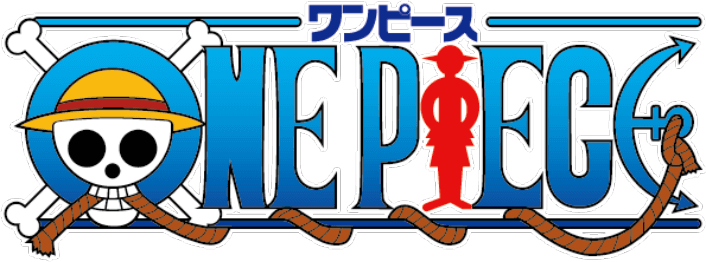

О проекте
Добро пожаловать на Grand Line Wiki — фанатскую мини-энциклопедию, посвященную замечательному миру «One Piece». Здесь вы найдете основную информацию о членах команды «Пиратов Соломенной Шляпы», классификацию Дьявольских плодов, а также актуальный список наград за поимку самых разыскиваемых пиратов!
Что такое One Piece

Последние слова, произнесенные Королем Пиратов перед казнью, вдохновили многих: «Мои сокровища? Берите их, если сможете! Теперь вы знаете, где я их оставил!». Легендарная фраза Гол Д. Роджера ознаменовала начало Великой Эры Пиратов – тысячи людей в погоне за своими мечтами отправились на Гранд-Лайн, самое опасное место в мире, желая стать обладателями мифических сокровищ...
График выхода серий
Новые эпизоды каждое воскресенье в 22:00 по московскому времени (МСК).